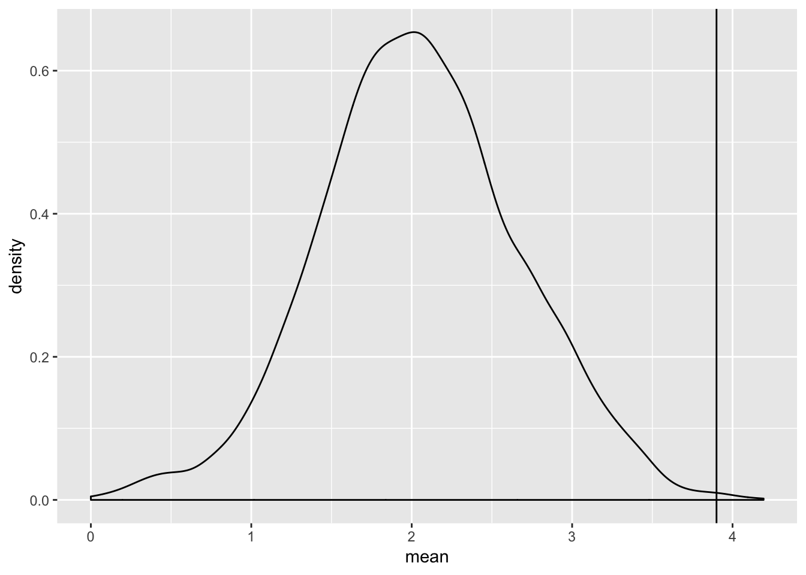

Today unfortunetely one of the games best players and the current Bronwnlow Medalist Tom Mitchell has been injured and will probably miss the whole 2019 AFL season. This is horrible news as he was just coming off arguably his best season (winning the Brownlow Medal). He’s an incredibly gifted inside player who through the Hawks savvy recruiting have just gotten him some extra outside players to handball the ball too.
To put in perspective just how good of a season hes had, I thought I’d share some R script and hopefully some of you will have your own take on just how good of a season hes had and just what Hawthorn is missing in 2019.
Tom Mitchell we know is a contested possession machine, just how much of a machine was he?
library(tidyverse)## ── Attaching packages ──────────────────────────────────────────────────────────────────────── tidyverse 1.2.1 ──## ✔ ggplot2 3.1.0 ✔ purrr 0.2.5
## ✔ tibble 2.0.1 ✔ dplyr 0.7.8
## ✔ tidyr 0.8.2 ✔ stringr 1.3.1
## ✔ readr 1.3.1 ✔ forcats 0.3.0## ── Conflicts ─────────────────────────────────────────────────────────────────────────── tidyverse_conflicts() ──
## ✖ dplyr::filter() masks stats::filter()
## ✖ dplyr::lag() masks stats::lag()fitzRoy::player_stats%>%
filter(Season==2018)%>%
group_by(Player)%>%
summarise(meanCP=mean(CP))%>%
arrange(desc(meanCP))## # A tibble: 657 x 2
## Player meanCP
## <chr> <dbl>
## 1 Patrick Cripps 17.6
## 2 Tom Mitchell 16.2
## 3 Clayton Oliver 16.2
## 4 Nathan Fyfe 16.1
## 5 Ben Cunnington 15.5
## 6 Patrick Dangerfield 15
## 7 Lachie Neale 15.0
## 8 Josh P. Kennedy 13.7
## 9 Jarryd Lyons 13.6
## 10 Jack Viney 13.5
## # … with 647 more rowsI don’t mean this as what will Tom Mitchell missing be on your fantasy team, what I mean is Supercoach scores are probably the best measure of a good player that we have available in fitzRoy.
We know a few things about SC scores, we don’t know their actual formula that is some champion data secret sauce. But in general it does pass the eye test, good players get good scores. If you were to pick a SC team based only on scores it would probably look pretty good. We also know that on average a game will get to about 3300 which we can verify below.
library(tidyverse)
check<-fitzRoy::player_stats%>%
group_by(Match_id)%>%
summarise(sumSC=sum(SC))%>%
arrange(desc(sumSC))
summary(check$sumSC) ## Min. 1st Qu. Median Mean 3rd Qu. Max.
## 3249 3299 3300 3300 3302 3331So we can see the mean and the median are the same.
Lets see how what % of supercoach scores does Tom Mitchell get per game on average and how does that compare?
fitzRoy::player_stats%>%
group_by(Match_id)%>%
mutate(pertSC=SC/sum(SC))%>%
group_by(Season, Player)%>%
summarise(mean=100*mean(pertSC))%>%
arrange(desc(mean))## # A tibble: 5,851 x 3
## # Groups: Season [9]
## Season Player mean
## <dbl> <chr> <dbl>
## 1 2012 Gary Jnr Ablett 4.19
## 2 2014 Gary Jnr Ablett 4.14
## 3 2017 Patrick Dangerfield 4.07
## 4 2014 Tom Rockliff 4.00
## 5 2016 Patrick Dangerfield 4.00
## 6 2010 Brendon Goddard 3.97
## 7 2018 Brodie Grundy 3.95
## 8 2011 Scott Pendlebury 3.93
## 9 2013 Gary Jnr Ablett 3.91
## 10 2018 Tom Mitchell 3.90
## # … with 5,841 more rowsBut just how good are these top 10 years? Lets look at it graphically.
fitzRoy::player_stats%>%
group_by(Match_id)%>%
mutate(pertSC=SC/sum(SC))%>%
group_by(Season, Player)%>%
summarise(mean=100*mean(pertSC))%>%
ggplot(aes(x=mean))+geom_density() + geom_vline(xintercept = 3.89)
But thats since 2010, what about just in the 2018 season?
fitzRoy::player_stats%>%
filter(Season==2018)%>%
group_by(Match_id)%>%
mutate(pertSC=SC/sum(SC))%>%
group_by(Season, Player)%>%
summarise(mean=100*mean(pertSC))%>%
arrange(desc(mean))## # A tibble: 657 x 3
## # Groups: Season [1]
## Season Player mean
## <dbl> <chr> <dbl>
## 1 2018 Brodie Grundy 3.95
## 2 2018 Tom Mitchell 3.90
## 3 2018 Jackson Macrae 3.85
## 4 2018 Max Gawn 3.78
## 5 2018 Patrick Dangerfield 3.63
## 6 2018 Patrick Cripps 3.62
## 7 2018 Nathan Fyfe 3.45
## 8 2018 Clayton Oliver 3.44
## 9 2018 Lachie Neale 3.39
## 10 2018 Jake Lloyd 3.35
## # … with 647 more rowsLets now join on the player position data.
library(rvest)## Loading required package: xml2##
## Attaching package: 'rvest'## The following object is masked from 'package:purrr':
##
## pluck## The following object is masked from 'package:readr':
##
## guess_encodinglibrary(tidyverse)
library(stringr)
url<-"https://www.footywire.com/afl/footy/ft_players"
link<-read_html(url)%>%
html_nodes("br+ a , .lnormtop a:nth-child(1)")%>%
html_attr("href")
url_players<-str_c("https://www.footywire.com/afl/footy/",link)
cbind.fill <- function(...){
nm <- list(...)
nm <- lapply(nm, as.matrix)
n <- max(sapply(nm, nrow))
do.call(cbind, lapply(nm, function (x)
rbind(x, matrix(, n-nrow(x), ncol(x)))))
}
player_info <- function(x){
# page <- read_html(x)
page<-read_html(x)
player<- page%>%
html_nodes(".ldrow .hltitle")%>%
html_text() %>% as.tibble()
playing.for<- page%>%
html_nodes(".ldrow a b")%>%
html_text() %>% as.tibble()
number<- page%>%
html_nodes(".ldrow > b")%>%
html_text() %>% as.tibble()
weight<-page%>%
html_nodes("form tr:nth-child(4) .ldrow")%>%
html_text()%>%
str_replace_all("[\r\n]" , "")%>%
str_squish()%>%
str_extract(pattern =("(?<=Weight:).*(?=Position:)"))%>%as.tibble()
height<-page%>%
html_nodes("form tr:nth-child(4) .ldrow")%>%
html_text()%>%
str_replace_all("[\r\n]" , "")%>%
str_squish()%>%
str_extract(pattern =("(?<=Height:).*(?=Weight:)"))%>%as.tibble()
draft_position <- page%>%
html_nodes("tr:nth-child(5) .ldrow")%>%
html_text()%>%
str_replace_all("[\r\n]" , "")%>%
str_squish()%>%
str_extract(pattern =("(?<=Drafted: ).*(?=by)"))%>%as.tibble()
club_drafted <- page%>%
html_nodes("tr:nth-child(5) .ldrow")%>%
html_text()%>%str_replace_all("[\r\n]" , "")%>%
str_squish()%>%
str_remove(".*by") %>% as.tibble()
position <- page%>%
html_nodes("form tr:nth-child(4) .ldrow")%>%
html_text()%>%
str_replace_all("[\r\n]" , "")%>%
str_remove(".*Position: ")%>%
str_squish() %>% as.tibble()
#combine, name, and make it a tibble
player_information <- cbind.fill(player, playing.for, number, weight, height,draft_position, club_drafted, position)
player_information <- as.tibble(player_information)
# print(x)
# return(x)
return(player_information)
}
footywire <- purrr::map_df(url_players, player_info)## Warning: `as.tibble()` is deprecated, use `as_tibble()` (but mind the new semantics).
## This warning is displayed once per session.names(footywire) <- c("player", "club", "number","weight","height", "draft_position", "club_drafted", "position")
head(footywire)## # A tibble: 6 x 8
## player club number weight height draft_position club_drafted position
## <chr> <chr> <chr> <chr> <chr> <chr> <chr> <chr>
## 1 Jake A… Richm… #39 <NA> <NA> <NA> "" ""
## 2 Ryan A… Geelo… #45 " 100… " 200… Round 4, Pick … " Geelong C… Ruck
## 3 Gary J… Geelo… #4 " 87k… " 182… Round 3, Pick … " Geelong C… Midfield
## 4 Blake … St Ki… #8 " 92k… " 190… Round 1, Pick … " St Kilda … Midfiel…
## 5 Marcus… Brisb… #24 " 98k… " 192… Round 2, Pick … " Western B… Defender
## 6 Taylor… Colli… #13 " 83k… " 181… Round 1, Pick … " GWS Giant… Midfielddf<-fitzRoy::player_stats%>%
filter(Season==2018)
dataset<-left_join(df, footywire, by=c("Player"="player","Team"="club"))
head(dataset)## Date Season Round Venue Player Team Opposition
## 1 2018-03-22 2018 Round 1 MCG Dustin Martin Richmond Carlton
## 2 2018-03-22 2018 Round 1 MCG Trent Cotchin Richmond Carlton
## 3 2018-03-22 2018 Round 1 MCG Josh Caddy Richmond Carlton
## 4 2018-03-22 2018 Round 1 MCG Kamdyn Mcintosh Richmond Carlton
## 5 2018-03-22 2018 Round 1 MCG Jack Riewoldt Richmond Carlton
## 6 2018-03-22 2018 Round 1 MCG Brandon Ellis Richmond Carlton
## Status Match_id CP UP ED DE CM GA MI5 One.Percenters BO TOG K HB D M
## 1 Home 9514 17 15 23 71.9 2 2 2 1 0 87 20 12 32 5
## 2 Home 9514 13 12 15 62.5 0 2 1 1 0 81 14 10 24 2
## 3 Home 9514 11 10 14 73.7 1 0 2 0 1 80 13 6 19 5
## 4 Home 9514 3 15 11 57.9 0 0 1 1 1 69 19 0 19 5
## 5 Home 9514 5 14 12 66.7 1 2 5 1 0 96 12 6 18 7
## 6 Home 9514 3 14 13 72.2 0 0 0 0 2 79 11 7 18 3
## G B T HO GA1 I50 CL CG R50 FF FA AF SC CCL SCL SI MG TO ITC T5 number
## 1 1 3 1 0 2 6 6 3 0 1 1 110 139 4 2 13 567 5 2 0 <NA>
## 2 0 0 4 0 2 5 7 2 0 2 0 86 94 2 5 10 293 5 3 1 <NA>
## 3 3 2 2 0 0 8 4 2 0 5 0 99 84 3 1 6 424 2 1 0 <NA>
## 4 0 1 1 0 0 8 1 5 3 0 1 74 50 1 0 7 644 5 4 0 <NA>
## 5 4 2 1 0 2 6 0 2 0 1 0 100 101 0 0 13 322 3 1 0 <NA>
## 6 0 1 3 0 0 4 0 5 2 0 0 69 51 0 0 6 417 5 5 0 <NA>
## weight height draft_position club_drafted position
## 1 <NA> <NA> <NA> <NA> <NA>
## 2 <NA> <NA> <NA> <NA> <NA>
## 3 <NA> <NA> <NA> <NA> <NA>
## 4 <NA> <NA> <NA> <NA> <NA>
## 5 <NA> <NA> <NA> <NA> <NA>
## 6 <NA> <NA> <NA> <NA> <NA>What we can see here is that the join didn’t work, this is because if we look at the pages we are getting the data from. Have different team names which we can see if we click here and here so lets fix this up.
An altertive way to see if its different would be to check a few values that you are joining on like so.
unique(footywire$club)## [1] "Richmond Tigers" "Geelong Cats"
## [3] "St Kilda Saints" "Brisbane Lions"
## [5] "Collingwood Magpies" "West Coast Eagles"
## [7] "Gold Coast Suns" "North Melbourne Kangaroos"
## [9] "Sydney Swans" "Essendon Bombers"
## [11] "Port Adelaide Power" "Adelaide Crows"
## [13] "Melbourne Demons" "Fremantle Dockers"
## [15] "Hawthorn Hawks" "GWS Giants"
## [17] "Western Bulldogs" "Carlton Blues"unique(fitzRoy::player_stats$Team)## [1] "Richmond" "Carlton" "Geelong"
## [4] "Essendon" "Melbourne" "Hawthorn"
## [7] "Brisbane" "West Coast" "Sydney"
## [10] "St Kilda" "Port Adelaide" "North Melbourne"
## [13] "Western Bulldogs" "Collingwood" "Fremantle"
## [16] "Adelaide" "Gold Coast" "GWS"footywire <- footywire%>%
mutate(club=replace(club, club=="Richmond Tigers", "Richmond") )%>%
mutate(club=replace(club, club=="Geelong Cats", "Geelong"))%>%
mutate(club=replace(club, club== "St Kilda Saints", "St Kilda"))%>%
mutate(club=replace(club, club=="Brisbane Lions", "Brisbane"))%>%
mutate(club=replace(club, club=="Collingwood Mapies", "Collingwood"))%>%
mutate(club=replace(club, club=="West Coast Eagles", "West Coast"))%>%
mutate(club=replace(club, club=="Gold Coast Suns", "Gold Coast"))%>%
mutate(club=replace(club, club=="North Melbourne Kangaroos", "North Melbourne"))%>%
mutate(club=replace(club, club=="Sydney Swans", "Sydney"))%>%
mutate(club=replace(club, club=="Essendon Bombers", "Essendon"))%>%
mutate(club=replace(club, club=="Port Adelaide Power", "Port Adelaide"))%>%
mutate(club=replace(club, club=="Adelaide Crows", "Adelaide"))%>%
mutate(club=replace(club, club=="Melbourne Demons", "Melbourne"))%>%
mutate(club=replace(club, club=="Fremantle Dockers", "Fremantle"))%>%
mutate(club=replace(club, club=="Hawthorn Hawks", "Hawthorn"))%>%
mutate(club=replace(club, club=="GWS Giants", "GWS"))%>%
mutate(club=replace(club, club=="Carlton Blues", "Carlton"))%>%as.data.frame()
df<-fitzRoy::player_stats%>%
filter(Season==2018)
dataset<-left_join(df, footywire, by=c("Player"="player","Team"="club"))
head(dataset)## Date Season Round Venue Player Team Opposition
## 1 2018-03-22 2018 Round 1 MCG Dustin Martin Richmond Carlton
## 2 2018-03-22 2018 Round 1 MCG Trent Cotchin Richmond Carlton
## 3 2018-03-22 2018 Round 1 MCG Josh Caddy Richmond Carlton
## 4 2018-03-22 2018 Round 1 MCG Kamdyn Mcintosh Richmond Carlton
## 5 2018-03-22 2018 Round 1 MCG Jack Riewoldt Richmond Carlton
## 6 2018-03-22 2018 Round 1 MCG Brandon Ellis Richmond Carlton
## Status Match_id CP UP ED DE CM GA MI5 One.Percenters BO TOG K HB D M
## 1 Home 9514 17 15 23 71.9 2 2 2 1 0 87 20 12 32 5
## 2 Home 9514 13 12 15 62.5 0 2 1 1 0 81 14 10 24 2
## 3 Home 9514 11 10 14 73.7 1 0 2 0 1 80 13 6 19 5
## 4 Home 9514 3 15 11 57.9 0 0 1 1 1 69 19 0 19 5
## 5 Home 9514 5 14 12 66.7 1 2 5 1 0 96 12 6 18 7
## 6 Home 9514 3 14 13 72.2 0 0 0 0 2 79 11 7 18 3
## G B T HO GA1 I50 CL CG R50 FF FA AF SC CCL SCL SI MG TO ITC T5 number
## 1 1 3 1 0 2 6 6 3 0 1 1 110 139 4 2 13 567 5 2 0 #4
## 2 0 0 4 0 2 5 7 2 0 2 0 86 94 2 5 10 293 5 3 1 #9
## 3 3 2 2 0 0 8 4 2 0 5 0 99 84 3 1 6 424 2 1 0 #22
## 4 0 1 1 0 0 8 1 5 3 0 1 74 50 1 0 7 644 5 4 0 #33
## 5 4 2 1 0 2 6 0 2 0 1 0 100 101 0 0 13 322 3 1 0 #8
## 6 0 1 3 0 0 4 0 5 2 0 0 69 51 0 0 6 417 5 5 0 #5
## weight height draft_position club_drafted
## 1 92kg 187cm Round 1, Pick #3 2009 National Draft Richmond Tigers
## 2 85kg 185cm Round 1, Pick #2 2007 National Draft Richmond Tigers
## 3 88kg 186cm Round 1, Pick #7 2010 National Draft Gold Coast Suns
## 4 91kg 191cm Round 2, Pick #31 2012 National Draft Richmond Tigers
## 5 92kg 193cm Round 1, Pick #13 2006 National Draft Richmond Tigers
## 6 82kg 181cm Round 1, Pick #15 2011 National Draft Richmond Tigers
## position
## 1 Midfield
## 2 Midfield
## 3 Midfield, Forward
## 4 Defender, Midfield
## 5 Forward
## 6 DefenderNow that we have the dataset there are a few caveats
I guess I should explain why I don’t think its an issue basically I have the feeling that if we look at Tom Mitchell is % of SC contribution as it were would be super high for midfielders i.e. Hawks don’t have much depth and hes the Brownlow Medalist so one of the best the league.
So lets view the NAs see if there are any notable midfielders who have retired and if not move on. If there are we can ‘’hard code them’’.
Usually we wouldn’t hard code them, I guess what we should do is go back to check how the page structure works but that would be for another time.
Max Laughton wrote a piece referencing stats provided from HPN about Tom Mitchells impact
Mitchell had 786 disposals over the 2018 home and away season; that was 9.4 per cent of Hawthorn’s team disposals total. Unsurprisingly, the next most reliant team was Carlton on Patrick Cripps; he had 652 disposals, 8.5 per cent of Carlton’s total disposal count. Cripps and Mitchell were the two most relied-upon midfielders in the AFL in 2018; Cripps had the largest proportion in the AFL of his team’s total contested possessions (13 per cent) and clearances (22.1 per cent), while Mitchell was second in those categories (11.3 and 21.5 per cent respectively)."
But I was left thinking I wonder how does that stack up as a percentage of the midfield group and what about the other teams? Do most teams have a high reliance on one midfielder? Are Cripps and Mitchell outliers or is this just a general footy thing?
You might also have an idea, maybe you don’t want to know about the clearances and the contested possessions and disposals. Perhaps you are interested in the % of score involvements, or club proportion of Brownlow Votes. These stats and a many others are in fitzRoy.
What I’m going to run through next, is just some ggplot visualisations of Tom Mitchells %s of Hawthorns midfield group with respect to a few things that were not covered in Max’s article. Specially looking at SC and score involvements. But also looking at clearances, disposals and contested possessions but league wide midfield groups and not just a Cripps/Mitchell club comparision.
You might have other ideas and that’s great hopefully you can take these scripts